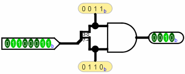
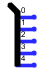

上一节: 创建捆绑包
分线器
当您使用多位值时，您通常会希望在不同方向上路由不同的位。 线路库的 分线器 tool () 可以让您完成此任务。
例如，假设我们需要一个电路来计算其八位输入的两个半字节（高四位和低四位）的按位与。 我们将有一个来自输入引脚的八位值，我们希望将其拆分为两个四位值。 在下面的电路中，我们使用分线器来完成此操作：8 位输入进入分线器，它将 8 位分成两个 4 位值，然后将其输入与门并从那里到输出 。

在此示例中，分线器将传入值拆分为多个传出值。 但拆分器也可以以另一种方式工作：它可以将多个值组合为一个值。 事实上，它们是无方向性的：它们可以一次以一种方式发送值，然后以另一种方式接收值，甚至可以同时执行这两种操作，如下例所示，其中值通过两个分线器向东传播，然后 再次向西穿过它们，然后向东返回，最终到达输出。

理解分线器的关键是它们的属性。 在下文中，术语Split End是指一侧的多根导线中的一根，而术语数据总线是指另一侧的单根导线。
- 方向 属性指示分叉端相对于总线端的位置。
数据总线
分叉末端 - 支路 属性指定分叉末端的数量。
- 位宽度输入属性指定数据总线端的位宽度。
- 外观定义分叉端相对于其数据总线的绘制方式。


右 左 

居中 传统 - 间距指定分叉端之间的间距。
- 位 x 属性定义哪个单独的分叉端对应于数据总线的哪个位 x。 它是可修改的，允许您手动组织分叉末端的顺序。 如果多个位对应于相同的分叉端（上面的第一个示例），则相对顺序将与总线中的相同。 Logisim-evolution 分配器的总线位不能连接到多个分叉端。
请注意，对“支路”或“位宽输入”属性的任何更改都将重置所有位 x 属性，以便它们在分叉端之间尽可能均匀地分配组合值的位。
下一节: 导线的颜色.